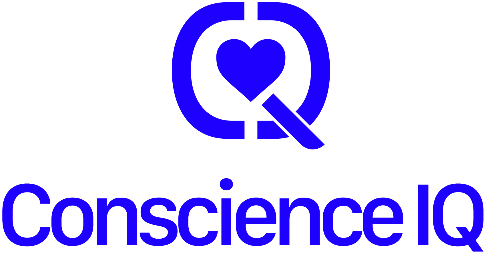

Strain
Track signs of cognitive and emotional load across demanding work patterns.

NextHealthcare
CIQ helps healthcare teams understand strain, readiness and recovery signals before they become visible breakdowns.
Track signs of cognitive and emotional load across demanding work patterns.
Give teams a clearer view of capacity before performance or care quality declines.
Turn early signals into better check-ins, staffing awareness and wellbeing action.
Current deployment
Healthcare is one of CIQ's current deployment areas. The focus is practical: understand burnout risk and recovery capacity earlier, with respectful use of human signals.